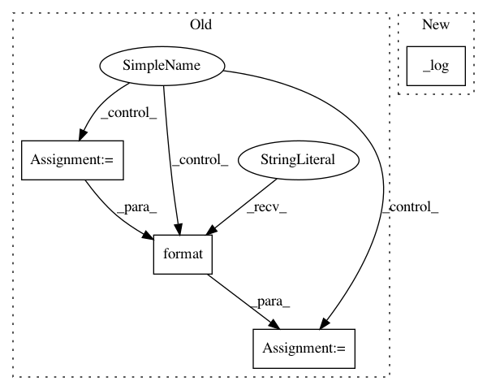

abc508579c61339dde51ca58bde602bb2bba224f,wandb/errors/term.py,,termlog,#Any#Any#Any#Any#,12
Before Change
repeat (bool, optional): If set to False only prints the string once per process
if string:
if prefix:
line = "\n".join(["{}: {}".format(LOG_STRING, s)
for s in string.split("\n")])
else:
line = string
else:
line = ""
After Change
newline (bool, optional): Print a newline at the end of the string
repeat (bool, optional): If set to False only prints the string once per process
_log(string=string, newline=newline, repeat=repeat, prefix=prefix, silent=not _show_info)
def termwarn(string, **kwargs):
string = "\n".join(["{} {}".format(WARN_STRING, s)
In pattern: SUPERPATTERN
Frequency: 3
Non-data size: 4
Instances
Project Name: wandb/client
Commit Name: abc508579c61339dde51ca58bde602bb2bba224f
Time: 2020-10-15
Author: annirudh@wandb.com
File Name: wandb/errors/term.py
Class Name:
Method Name: termlog
Project Name: tensorflow/models
Commit Name: 2d34259281a6251cbdc67103ce8a1310010b8ceb
Time: 2020-10-05
Author: dhr@google.com
File Name: orbit/controller.py
Class Name: Controller
Method Name: _train_n_steps
Project Name: tensorflow/models
Commit Name: 2d34259281a6251cbdc67103ce8a1310010b8ceb
Time: 2020-10-05
Author: dhr@google.com
File Name: orbit/controller.py
Class Name: Controller
Method Name: evaluate